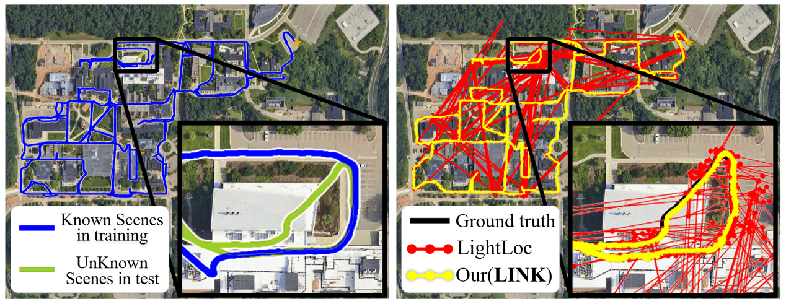
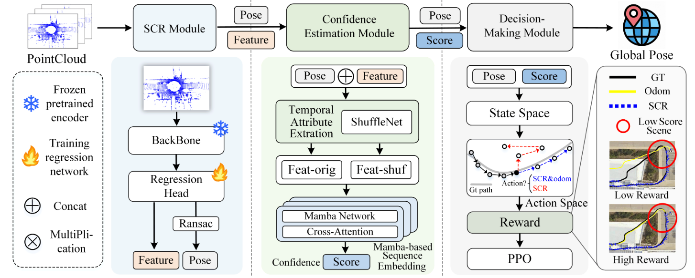
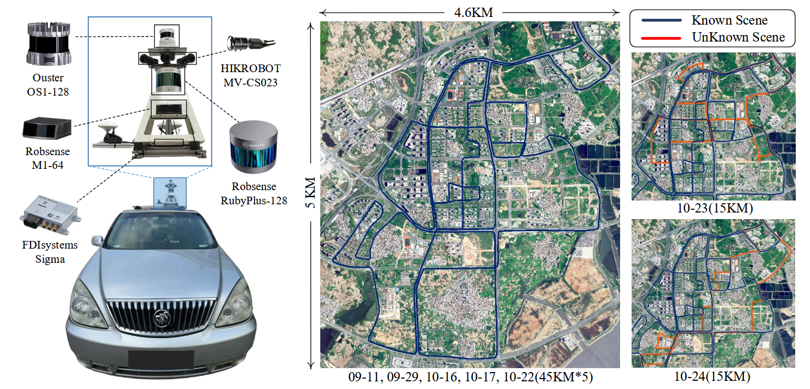

Research project · LiDAR localization
LINK.Learning to Localize from
Known to Unknown Scenes
A confidence-guided framework for map-free LiDAR relocalization when a route extends beyond the scenes seen during training.
THE QUESTION
What happens when the route leaves the training map? LINK keeps a globally referenced pose by deciding when to trust an absolute prediction and when to propagate from a reliable history.01 / The challenge
Training coverage ends.
The journey does not.
Scene coordinate regression can produce accurate absolute poses on familiar routes, but its predictions may become unreliable on road segments missing from training. LINK is designed for these known-to-unknown transitions.

02 / The method
Trust the pose when it earns trust.
LINK combines an absolute scene-coordinate-regression hypothesis, temporal reliability estimation, and a learned policy for choosing the localization mode.
Predict
An SCR backbone produces an absolute pose hypothesis and scene features from each LiDAR scan.
Assess
Temporal pose and feature consistency yield a soft reliability score for the current hypothesis.
Decide
A policy chooses direct localization or odometric propagation from a reliable historical pose.

03 / The benchmark
Meet UrbanUnseen.
A city-scale LiDAR relocalization benchmark with natural route-level transitions between known and unknown scenes, complementing controlled partial-coverage protocols on Oxford and NCLT.
Routes 10-23 and 10-24 are each about 15 km long and contain approximately 50% unknown scenes, as described in the manuscript.

04 / Quantitative evidence
Robustness beyond
familiar roads.
Lower translation error is better. The figures below compare LINK with LightLoc + factor-graph optimization in the manuscript’s partially known protocols.
| Protocol | Known training support | LightLoc + FG | LINK |
|---|---|---|---|
| Oxford · random | 20.0% | 6.94 m | 2.24 m |
| NCLT · random | 25.7% | 4.29 m | 2.39 m |
| UrbanUnseen · 10-23 | ~50% | 10.43 m | 7.24 m |
| UrbanUnseen · 10-24 | ~50% | 9.58 m | 7.52 m |
Oxford and NCLT values are sequence averages from manuscript Tables 1–2; UrbanUnseen values are route results from Table 3. “+ FG” denotes a baseline enhanced with odometry and factor-graph optimization.
05 / In motion
Oxford, frame by frame.
Watch the supplied Oxford trajectory demonstration. The LINK localization track stays close to the ground-truth route in the shown sequence.
DEMO 01 Oxford trajectory animation supplied with the project materials. Playback is available directly in the browser.